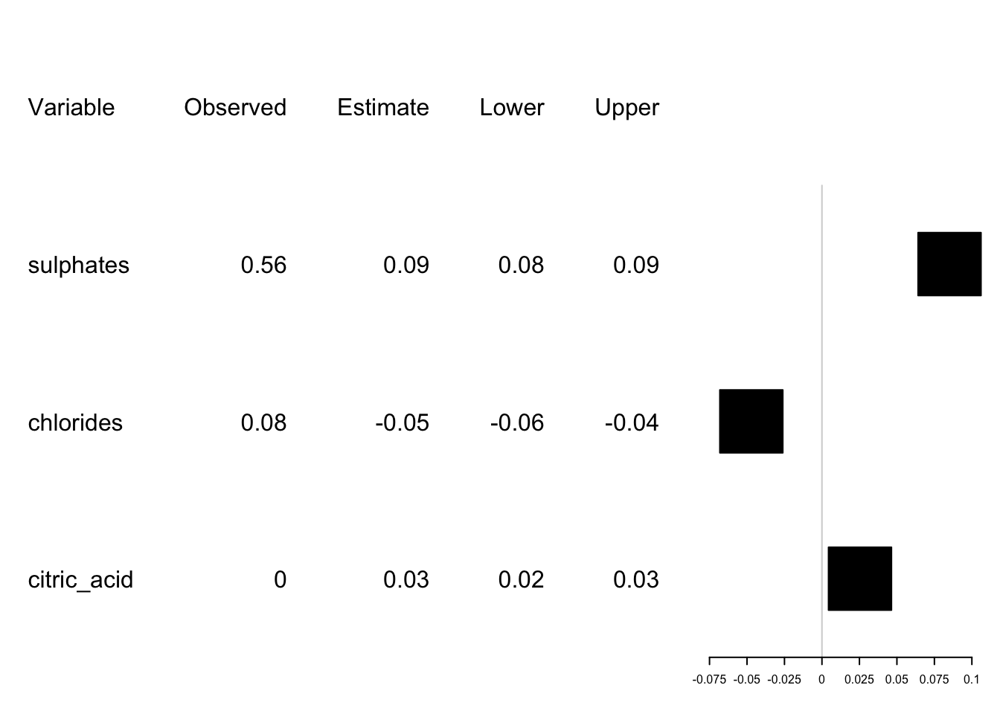
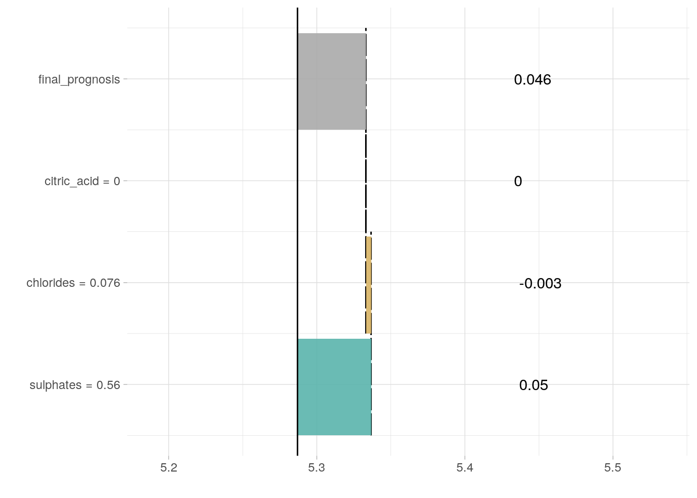

## Warning: replacing previous import 'BBmisc::isFALSE' by
## 'backports::isFALSE' when loading 'mlr'Wine quality is a well-known dataset which was an object of study in Paulo Cortez, University of Minho, Guimarães, Portugal, http://www3.dsi.uminho.pt/pcortez A. Cerdeira, F. Almeida, T. Matos and J. Reis, Viticulture Commission of the Vinho Verde Region(CVRVV), Porto, Portugal 2009. Lichman, M. (2013).
The dataset contains variuos properties of a set of wines. For each wine there is 11 features based on physicochemical tests like density or pH and also and outcome variable: a score that describes the wine’s quality. The score is based on evaluations made by wine experts.
According to the results from the original article, Support Vector Machine model is better than other models, including linear regression, for prediction purposes. In this section we will show how live package can be used to fit linear regression model locally and generate a visual explanation for the black box model.
First, we can perform a quick bechmark experiment to see that SVM performs better than linear regression and, say, neural network.
| Learner | Mean MSE |
|---|---|
| SVM | 0.39 |
| Linear regression | 0.43 |
| Neural network | 0.55 |
Suppose we want to understand prediction generated by SVM for the fifth observation in the dataset. To do this, we need to generate observations for local exploration.
We use simulateSimilar function from live package. standardise is set to TRUE, so all variables will be normalized.
similar <- sample_locally(data = winequality_red,
explained_instance = winequality_red[5, ],
explained_var = "quality",
size = 100,
standardise = TRUE)
similar1 <- add_predictions(winequality_red, similar, "regr.randomForest")
similar2 <- add_predictions(winequality_red, similar, "regr.svm")Then we fit linear regression model to predictions generated by SVM for this simulated dataset using function.
trained <- fit_explanation(live_object = similar1,
white_box = "regr.lm",
selection = TRUE)This function returns a native object. Model object (for example lm object) can be extracted using function. By setting we choose to perform variable selection using AIC as implemented in package which is available on CRAN.
Now we can visualize fitted model by calling function.
plot_explanation(trained,
regr_plot_type = "forestplot",
explained_instance = winequality_red[5, ])
plot_explanation(trained,
regr_plot_type = "waterfall",
explained_instance = winequality_red[5, ])
Only variables chosen in the selection step are displayed. They are sorted according to the absolute value of t-test statistic. In the Observed column predictor values for case given in observation} argument are displayed. Estimate column gives fitted parameter values, while Lower and Upper give lower and upper bounds of 95% confidence interval, respectively. The plot show Estimate value on x axis. From the signs of the parameters and their magnitude wee can see how variables influence predictions.